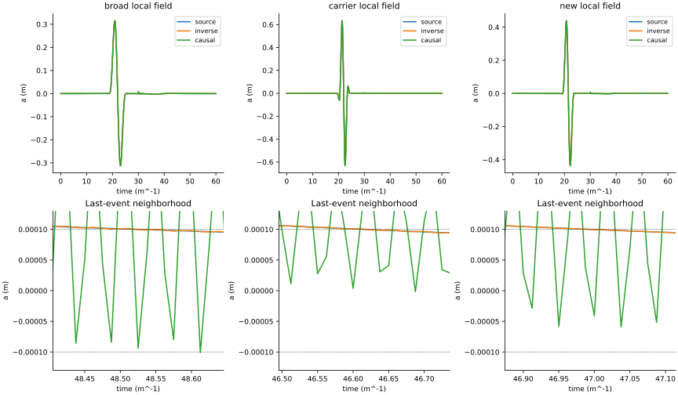
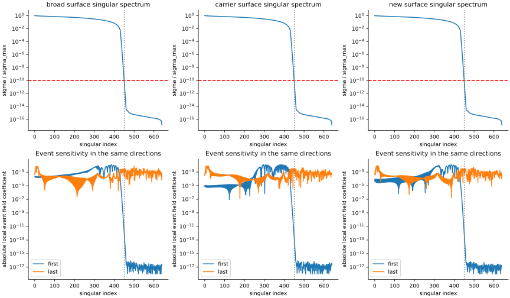
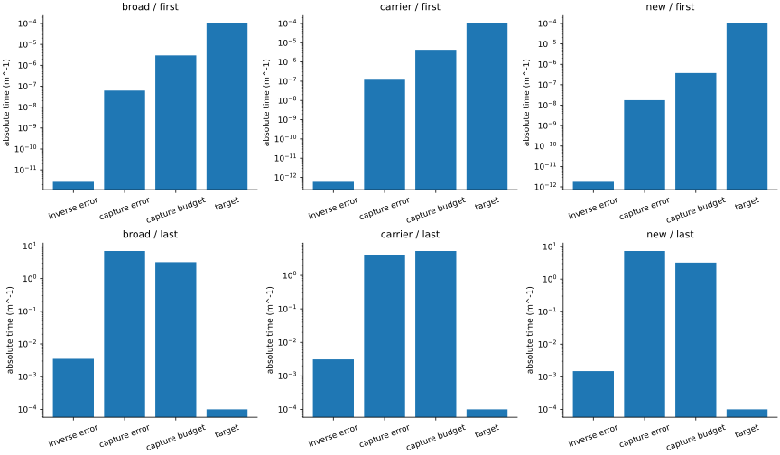
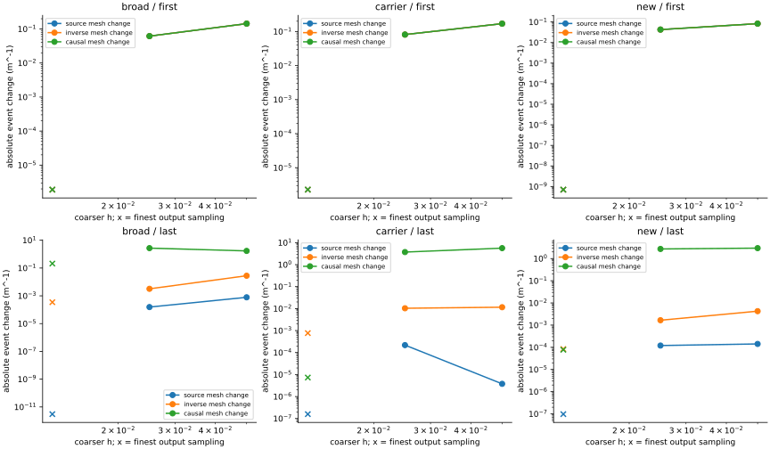

# Test 7: bounded reconstruction and event timing Run run-ca19609e702134b1; analysis analysis-0001-a8cc0c93; classification fail. No nonlinear receiver or new clock-phase forecast was executed. Original Test 7 remains failed and Test 8 remains blocked. causal-capture: pass causal-timing: unresolved continuum-events: unresolved decomposition: pass inverse-observability: fail prediction-first: pass sampling: unresolved source-energy: pass surface-replay: pass broad first: causal error 6.205580e-08; budget 2.981606e-06; target 1.0e-04 inverse-mass units. broad last: causal error 7.064919e+00; budget 3.197129e+00; target 1.0e-04 inverse-mass units. carrier first: causal error 1.197330e-07; budget 4.281598e-06; target 1.0e-04 inverse-mass units. carrier last: causal error 4.009644e+00; budget 5.390440e+00; target 1.0e-04 inverse-mass units. new first: causal error 1.762566e-08; budget 3.751641e-07; target 1.0e-04 inverse-mass units. new last: causal error 7.332622e+00; budget 3.211918e+00; target 1.0e-04 inverse-mass units. local-reconstruction Question: How do the inverse and causal surface capture reproduce the local waveform and its late tail? Reading: Top panels show the complete local linear field; lower panels resolve the threshold neighborhood of the last event. Significance: A close overall waveform can still produce a sensitive late threshold time. Limitation: Causal capture uses an extra neighboring surface site. The known-source curve is a downstream audit; no nonlinear clock is evolved. singular-observability Question: Which surface singular directions remain relevant to each local event? Reading: The dashed cutoff divides the retained inverse from weakly observed directions. Lower panels show how those directions enter each event field. Significance: Observability depends on interior sensitivity as well as the size of the surface singular value. Limitation: The norm radii and surface tolerance are declared conditional assumptions; root linearization is checked with finite witnesses but is not a global event theorem. event-budgets Question: Are first and last reconstruction errors separately below their uncertainty budgets? Reading: Each event has its own capture residual budget; small first-event errors cannot hide a last-event discrepancy. Significance: Tests a strict reconstruction prerequisite with target 1e-4 time units, preserving the original Test 7 thresholds. Limitation: Budgets are direct difference estimates. They measure reconstruction residuals; absolute continuum event shifts and nonlinear phase acceptance are separate. sampling-continuum Question: How much do sampling and mesh changes move each event? Reading: Lines are adjacent absolute event mesh changes; crosses show output-decimation shifts on the finest grid. Significance: Separates absolute event convergence from agreement between source and reconstruction on one grid. Limitation: The h=0.0125 source is not an exact continuum reference. Surface-sampling and independent time/domain components are also retained in the saved budgets.



